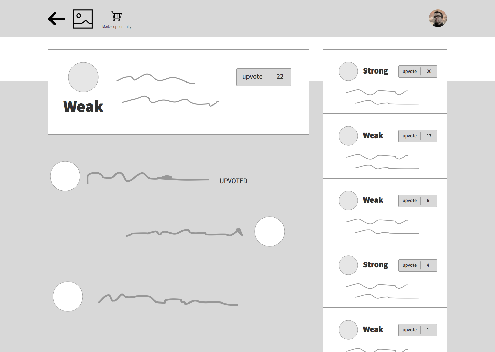

Overview
A platform for organizing and critiquing your opinions about startups. This is important because in May 2016 Title III of the JOBS Act (AKA equity crowdfunding) will come into effect. We want to help create businesses that deserve investment.

The Challenge
Launching a startup means creating something new. Investing in a startup means understanding something new from the outside and, in terms of actually signing an investment agreement, demonstrating value in exchange for equity. These difficult but interesting tasks could be your profession, but whether or not you are a professional entrepreneur or investor your insight is valuable. There are no procedures for creating or analyzing something new so nobody has a corner on certainty in this arena; everybody is a possible source of truth. Granted, some people are more likely to be helpful than others, but this is a skill and it can be learned. A good way to learn is by organizing and critiquing your opinions. The challenge is finding people who share your interests, have a different viewpoint, and are able to engage in productive criticism.
The difference between productive and unproductive criticism is the difference between an argument and a controversy (credit to Matthew Mausner, CEO Woxxer):
- Argument: critiquing someone's opinion with a shared understanding of the topic.
- Controversy: critiquing someone's opinion without a shared understanding of the topic.
If I say global warming is a fact and you respond that economic development is more important, then we're in a controversy, not an argument. From my perspective, the topic is science; from yours, it's politics. If I say a company is a good investment because the team is perfectly balanced, and you respond that it's not because the business model is unsustainable, then again we're in a controversy. In both instances we are critiquing each other, but in neither are we making any progress.
Research
But are people even interested in critiquing startups?
We can't just ask people. It's too easy to say yes to a question like that. What we need is to actually observe people critiquing startups. Once we framed the question like that, a potential answer popped up: we'll share our opinion about a startup/investment and see if anyone responds. So Mike made up a company, Brancher, and we made some posts about it on Reddit and Quora.
Test #1: Post

People responded. Not exactly as we hoped (they didn't follow our lead and use headers like The Problem, The Solution, The Team, etc.) but enough to show us that there is a genuine desire to publically write about startups/investment opportunities.
Test #1: Response

Jobs-To-Be-Done
What job is it that people are accomplishing when they critique a stranger's opinion about a startup/investment opportunity? This line of questioning is generally presented as an alternative to Personas, but I don't find them incompatabile.

Sketching
Ryan Singer has this great video where he walks through the process of creating an application. He observes that most applications require the basic functions of a computer database: Create, Read, Update, and Delete (CRUD). For us that means that a user needs to be able to Create their analysis of a startup, Read other people's analyses, and finally Update or Delete it. These are the minimal functions. On top of that, we're adding the ability to browse startups and, in some form, a place where users can critique each other's opinions. This last concept was giving us some trouble.
